2008 · International Refugee Day
The Barefoot Walk
Seventeen days on foot, without shoes, from Derby to the Prime Minister's door, to show how misgovernment in Africa drives conflict and refugee flows.
- Distance
- 125 mi
- Duration
- 17 days
- Footwear
- None
Advocate · Author · Pan-Africanist
He came to Britain as a refugee from Cameroon. He went on to win national honours for his work with refugees, represent an African parliamentary alliance at the United Nations in Geneva, and lead programmes at the World Colonization Memorial.
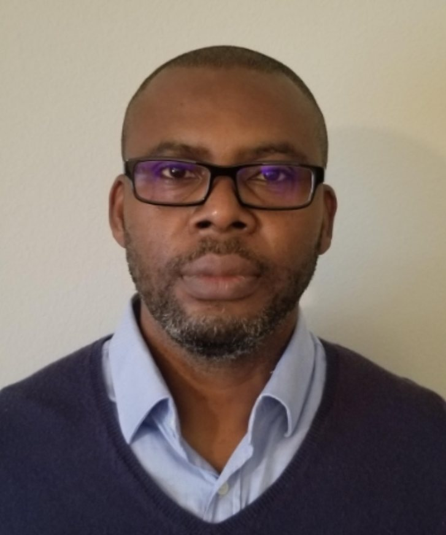
2008 · International Refugee Day
Seventeen days on foot, without shoes, from Derby to the Prime Minister's door, to show how misgovernment in Africa drives conflict and refugee flows.
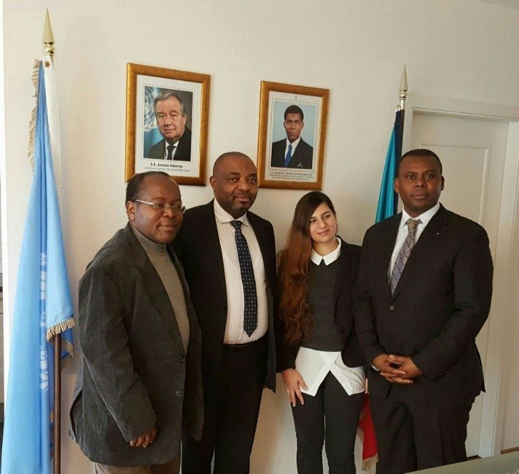
GenevaPermanent Representative, African Parliamentary Alliance for UN Reforms2004 · Manchester
UN Arms
Trade Treaty
His motion at Amnesty International's AGM fed Amnesty's campaign for the treaty.
Latest book
Triumph of Racism
The history of white supremacy in Africa.
See the books →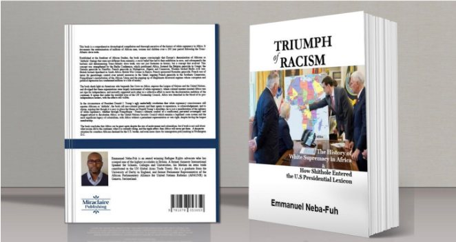
Biography
Emmanuel Neba-Fuh left Cameroon as a refugee, passed through Italy, and settled in England. The experience of seeking asylum shaped everything he did afterwards.
In Derby he studied Applied Community Work and Social Care at the University of Derby and began working directly with asylum seekers and refugees. In 2005 he co-founded the Derby Refugee Forum and chaired it. He also worked with Connexions Derbyshire and sat on the Derbyshire Constabulary Independent Advisory Board, where he helped the police build trust with refugee communities.
As a speaker for Amnesty International he addressed schools, colleges and universities on genocide and refugee issues. At Amnesty's 2004 Annual General Meeting in Manchester he delivered a motion on the arms trade, a contribution that fed into Amnesty's campaign for the UN Global Arms Trade Treaty.
In 2008, on International Refugee Day, he walked barefoot from Derby to 10 Downing Street to argue that bad governance in Africa drives conflict, and conflict drives refugees.
His work moved from the local to the international. In 2011 he convened the Big Society Initiative for Africa conference at the House of Commons. From 2012 he returned to Cameroon several times to seek a peaceful settlement of the Anglophone question, leading a national consultation with government officials, traditional rulers, academics and Anglophone groups. Traditional rulers of the North West Region made him a knighted Ambassador for Peace.
He later served in Geneva as Permanent Representative of the African Parliamentary Alliance for United Nations Reforms (APAUNR), meeting diplomatic missions and UN officials on Africa's place in global governance. Today he is Program Director of the World Colonization Memorial, a US nonprofit that works to restore dignity to the victims of colonization and the transatlantic slave trade.
Initiatives
As Program Director of the World Colonization Memorial, Dr. Neba-Fuh works across three related initiatives on remembrance, dignity and historical accountability.
A 501(c)(3) nonprofit restoring dignity to victims of colonization and the transatlantic slave trade, with commemoration sites, a database of victims' names, and engagement with the United Nations.
wcm-m.org ↗ WCM initiativeThe Transatlantic Slaves Homecoming and Door-of-No-Return Standard: a framework for governments to preserve slave ports and Doors of No Return, and to support remembrance and reconciliation.
tashstandard.org ↗ WCM initiativeA memorial to be established in Africa honouring the millions who resisted, suffered and died under colonization and the slave trade, with programmes including the Transatlantic Homecoming.
ancom-m.org ↗Career
Delivers a motion on the arms trade that contributes to Amnesty's push for the UN Global Arms Trade Treaty.
Co-founds and chairs a forum supporting asylum seekers and refugees across Derbyshire.
Presented by the then Home Secretary, David Blunkett MP, at the Theatre Royal, London.
Walks 125 miles barefoot from Derby to 10 Downing Street over 17 days.
Presented by Jon Snow of Channel 4 News. The same year he delivers a petition to Prime Minister Gordon Brown.
Convenes a conference at the House of Commons bringing together MPs, NGOs and the African diaspora.
Knighted by traditional rulers of Cameroon's North West Region while working on the Anglophone question.
Leads talks with officials, traditional rulers, academics and Anglophone groups; attends the 50th anniversary of reunification in Buea.
Represents the African Parliamentary Alliance for UN Reforms before diplomatic missions and UN bodies.
Leads programmes on remembrance and dignity for victims of colonization and the transatlantic slave trade.
Honours
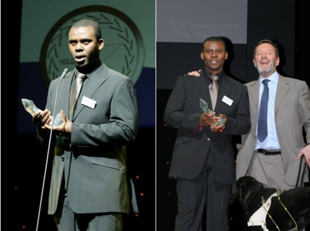
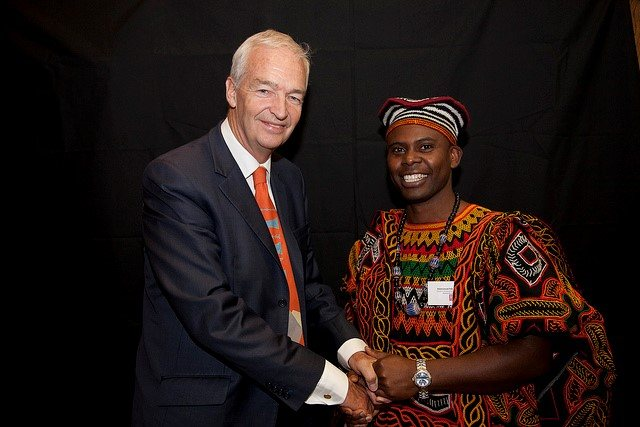
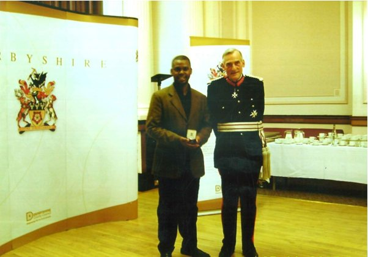
2012 Knighted Ambassador for Peace by the traditional rulers of the North West Region, Cameroon.
Books
The History of White Supremacy in Africa & How Shithole Entered the U.S. Presidential Lexicon
A chronological history of the subjugation of Africa, from Europe's early portrayals of Africans as "other" through colonial conquest to the political language of the present day.
View on AmazonVolume one
The history of Southern Cameroons from 1884 to 1984, from Portuguese explorers and British Baptist missionaries through German and British colonial rule.
Photographs
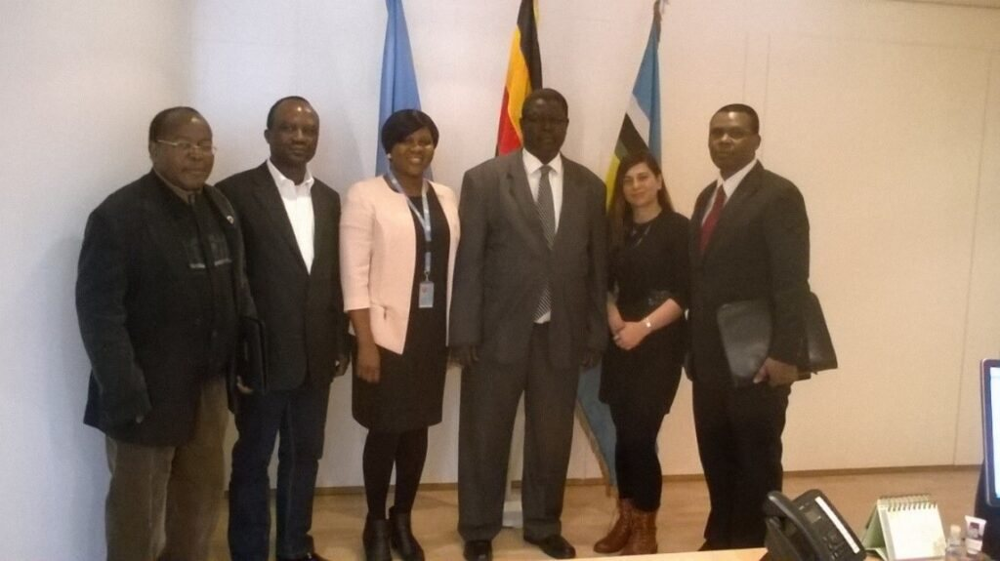
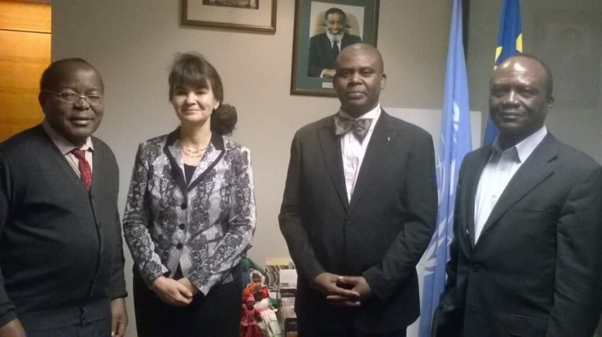
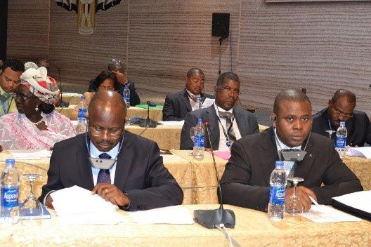
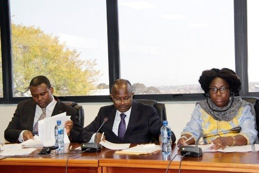
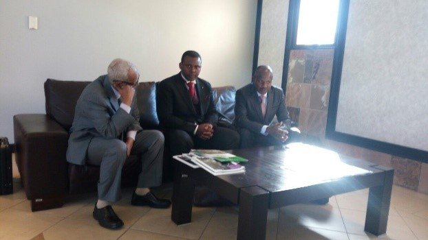
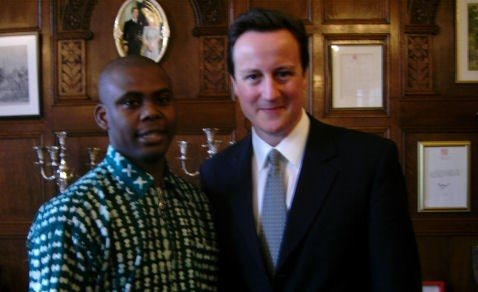
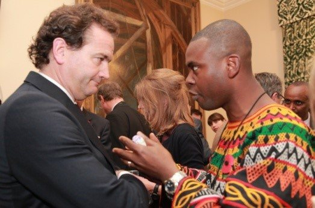
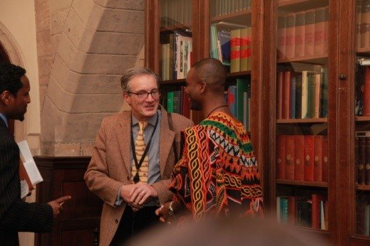
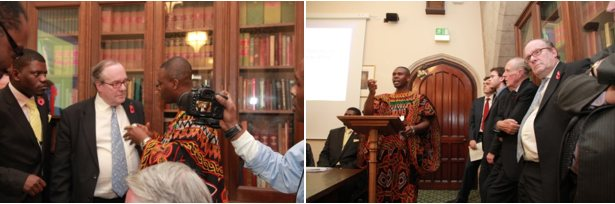
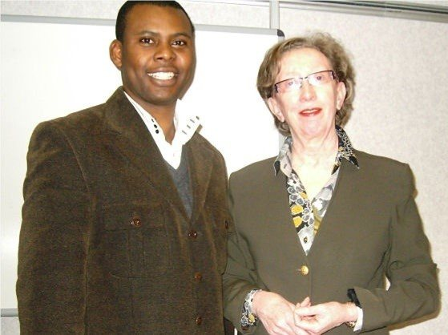
Contact
Dr. Neba-Fuh speaks at conferences, universities and community events on refugee rights, UN reform, and the history and memory of colonization.